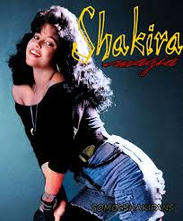

Shakira es una cantante, compositora, bailarina y empresaria colombiana reconocida a nivel mundial. Se destaca por su estilo único que combina pop, rock y ritmos latinos, además de su particular voz y sus coreografías influenciadas por la danza árabe.
Shakira Isabel Mebarak Ripoll nació el 2 de febrero de 1977 en Barranquilla. Desde muy pequeña mostró un gran interés por la música y la escritura. A los 8 años compuso su primera canción y comenzó a participar en presentaciones escolares donde cantaba y bailaba.
A los 13 años firmó su primer contrato discográfico y lanzó su primer álbum, Magia (1991). Aunque sus primeros trabajos no tuvieron mucho éxito, le permitieron ganar experiencia en la industria musical y desarrollar su estilo artístico.
